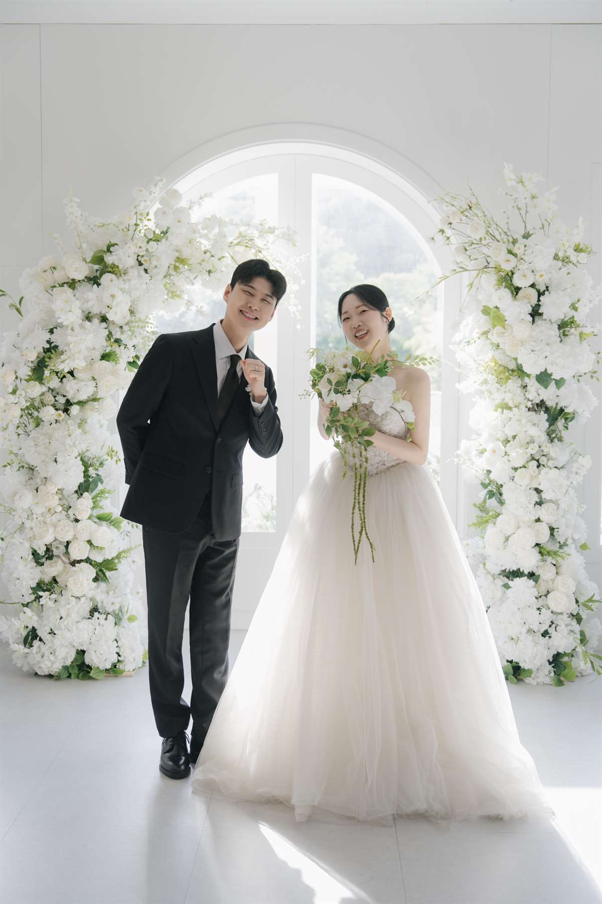
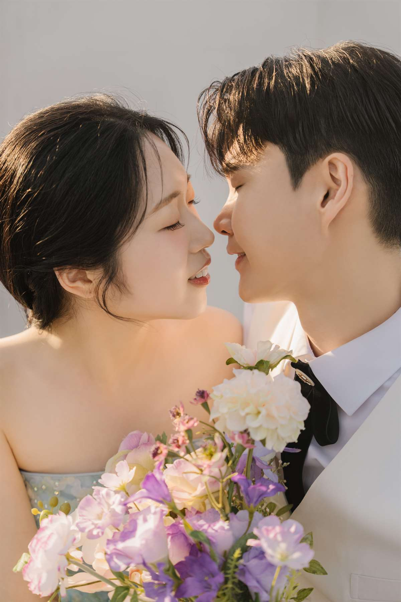

A Promise in Winter
You Are Invited
모시는 글
겨울의 한가운데에서, 두 사람이 평생 함께 걸을 한 곡의 첫 박자를 맞춥니다. 오래 기다려 온 이 하루에 귀한 걸음으로 함께해 주시면 더없는 기쁨이겠습니다.

Save the Date
December
예식 안내
DECEMBER052026년 12월 5일 토요일 오후 1시 30분
0Days
00Hours
00Minutes
00Seconds

Directions
티웨딩 천안
투데이홀
충청남도 천안시 동남구 목천읍 응원3길 27
충남 천안시 동남구 목천읍 응원리 67-1

축척 없는 안내도입니다.
자가용
네비게이션에 티웨딩 천안을 검색해 주세요. 천안IC보다 독립기념관IC · 남천안IC를 이용하시면 더욱 편리합니다.
셔틀버스 — 20분 간격
천안터미널
100m 직진 후 우리은행 앞
천안역
4번 출구 동부광장 건너편 GS25편의점 앞
버스
세광엔리치빌 정류장 하차 · 천안역 기준 24 · 383 · 400 · 401 · 500
주차 · 문의
1,500대 · 무료주차 · 041-555-7900
RSVP
참석 여부
참석 여부를 알려 주시면 준비에 큰 도움이 됩니다.
참석 여부를 알려 주세요.
With Gratitude
마음 전하실 곳
참석이 어려우신 분들을 위해 안내드립니다. 너그러이 양해 부탁드립니다.
계좌번호 보기
은행 000-0000-0000 신랑
은행 000-0000-0000 신부
Guestbook
축하의 한마디
두 사람에게 짧은 축하 한 줄을 남겨 주세요.
축하 메시지를 남겨 주세요.

With All Our Hearts